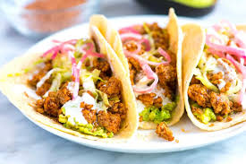

Pork Tacos

This is a dish that will make your tongue jump out of your mouth, slap you in the face, and say 'Oh yeah'. Put meat and maybe some Pico De Gallo or salsa into warm tortillas to make tacos.
Ingredients
- 4 pounds pork shoulder roast
- 2 (4 ounce) cans diced green chilies, drained
- ¼ cup chili powder
- 1 teaspoon dried oregano
- 1 teaspoon taco seasoning
- 2 teaspoons minced garlic
- 1 ½ teaspoons salt, or to taste
Steps
- Preheat the oven to 300 degrees F (150 degrees C).
- Place the roast on top of a large piece of aluminum foil. In a small bowl, stir together the green chiles, chili powder, oregano, taco seasoning and garlic. Rub onto the roast. Wrap foil around the roast so that it is completely covered, using additional aluminum foil if necessary. Place on top of a roasting rack in a baking dish, or place a cookie sheet on an oven rack below to catch any leaks.
- Roast the meat for 3 1/2 to 4 hours in the preheated oven, until falling apart. Cook to at least 145 degrees F (63 degrees C). Remove from the oven, and shred into small pieces using two forks. Season with salt to taste.